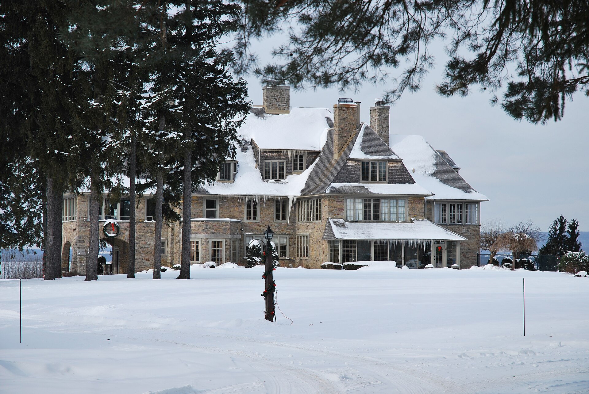

Arts and Crafts country estate Le domaine Arts and Crafts

« Maison John-Launcelot-Todd, 180, chemin de Senneville (Senneville) », photo Anne-Marie Dufour, 2010-12-10, Flickr stream *Parcours riverain — Ville de Montréal*; Wikimedia Commons, CC BY 2.0, Flickr licence review passed, reviewer FlickreviewR 2, 2024-04-30 (verified through the Commons API and the file's wikitext).
A dozen country estates on one road, more than 1,400 acres, and at least 82 buildings put up between 1860 and 1930 — houses of stone and shingle set far back in wooded grounds, each with its own stable, chapel, farm buildings, tea house and gatekeeper's lodge in the same manner, and grounds designed to keep the house out of sight from the chemin. The Maxwells built dozens of them; twenty survive.
Sir John Joseph Caldwell Abbott, mayor of Montréal and later prime minister, bought a Gothic revival house at Senneville for a second residence, and the rest of financial Montréal followed him — Forget, Angus, Clouston, Morgan, Todd, founders and presidents of the Bank of Montreal and the Canadian Pacific among them. Between 1865 and 1930 they turned the old Senneville farms into estates and hired one small circle of architects and landscape architects to do it: Edward and William Sutherland Maxwell, often with George Cutler Shattuck; Percy Erskine Nobbs with George Taylor Hyde; Robert Findlay; and, for the grounds, Frederick G. Todd working with the American Frederick Law Olmsted. Because so few people commissioned so few designers over so short a period, the result has, in Parks Canada's words, "a strong formal and stylistic coherence" — which is exactly what makes it legible as a type rather than a collection. The 2005 Ville de Montréal cahier, which is not given to superlatives, calls the road one of the most picturesque in Montréal and the sector exceptional « non seulement à Montréal, mais au Canada ». Set that against the Mille carré doré in Part 11's other half, which has no ensemble protection at all: a country road of eighty-two seasonal houses is a National Historic Site, and the richest domestic architecture on the island is not. That asymmetry is the argument of this part, and Senneville is one end of it.
| Tenure / plan | single-family |
|---|---|
| Storeys | 2–2.5 |
| Roof form | gabled-multi |
| Roof pitch | – |
| Window proportion | – |
| Principal cladding | cut-stone, fieldstone, wood-shingle, stucco, clay-brick |
| Roofing | cedar shingle |
| Garage | detached |
| Lot width | – |
| Front setback | – |
| Side setback | – |
| Front yard green | – |
What Parcs Canada says about this type
- « De l'autoroute Transcanadienne à la limite de l'ancienne municipalité de Senneville, entre le lac des Deux-Montagnes et l'Arboretum Morgan, on trouve une grande concentration de résidences du début du XIXe siècle qui, avec la végétation, les éléments de paysage et le tracé du chemin de Senneville en font un secteur pittoresque de qualité exceptionnelle non seulement à Montréal, mais au Canada. »
- « Les Forget, Angus, Morgan et Abbot, pour ne mentionner que ceux-là, ont confié la conception de leurs résidences à des architectes et des architectes paysagistes de prestige (Maxwell, Findlay, Hyde, Nobbs, Olmsted, Todd, Rose). Le bâti y est pour la plupart implanté du côté du lac et éloigné du chemin. »
- « Souvent de style Arts and Crafts ou Shingle Style, les résidences agencent des volumes nets et des toitures importantes de façon plus ou moins complexe avec leurs revêtements de pierre taillée ou de moellons, brique, bois, stuc et toitures en bardeaux de cèdre. »
- « Les grandes propriétés comportent généralement des bâtiments ancillaires (résidence du personnel, chapelle, bâtiments de ferme, pool house, écurie, garage, maison de thé, chambre froide, tour d'observation, etc.), généralement du même style, implantés dans des aménagements raffinés – sentiers sinueux, grands jardins, boisés, étangs, vergers, murets de pierre, portails, maison de gardien – en retrait ou visibles du chemin de Senneville. »
- « Bien que la plupart des édifices les plus imposants ont été construits en fonction d'une utilisation saisonnière, le secteur comprend aussi des résidences de l'après-guerre et des demeures contemporaines qui lui donnent un caractère suburbain mais qui poursuivent la tradition d'intégration du bâti au paysage. »
- The estate, not the house, is the unit. Parks Canada counts "more than 1400 acres" and "at least 82 buildings constructed between 1860 and 1930 as part of about a dozen country estates", strung along one country road that runs parallel to the lac des Deux-Montagnes.
- Houses sit far back inside large wooded grounds, most of them backing onto the lake, and the planting is arranged so that the house cannot be seen from the chemin de Senneville at all.
- The designed landscape is part of the building. Winding paths, great gardens, woods, ponds, orchards, stone walls, gateways and a gatekeeper's house, either set back from the chemin or visible from it.
- Four pieces of former estate land are now public and form a greenbelt — the Morgan Arboretum, the Braeside golf course of about 1898, the Anse-à-l'Orme nature park and the Bois-de-la-Roche agricultural park.
- Rambling rather than composed. Clean volumes and large roofs assembled with more or less complexity, two to two and a half storeys, gables and dormers pushed forward off the main slope.
- Ancillary buildings in the same manner and generally in the same style — staff house, chapel, farm buildings, pool house, stable, garage, tea house, cold room, observation tower.
- Deep sun porches and glazed loggias, ranges of casements set flush in the wall plane, massive stone chimney stacks carried well above the ridge.
- Long horizontal bands of small-paned casements; no source gives a proportion.
- Cut stone or rubble, brick, wood, stucco, and cedar shingle on the roofs — the Senneville fiche's own list, in that order.
Unusually well evidenced for the West Island, because a federal designation record exists and is detailed; but still not a per-type record, so the five columns are inferred from an estate-level description rather than read off a table. Null and why: `window_proportion` and `roof.pitch_deg` — no source states either; `lot_width_m`, `setback_front_m`, `setback_side_m`, `front_yard_green_pct` — the sources describe deep setbacks and screened approaches in words and never in numbers, and the one measured figure that exists is the district's total area, "more than 1400 acres", which is not a lot width; `sectors` — a shared record cannot carry sector codes that exist in only one of its places. `storeys`, `roofing`, `garage` and `principal_cladding` come from the Senneville fiche's own materials list and its list of ancillary buildings, checked against the photograph, not from a stated figure. Two corrections to Part 11's brief, both from the primary source. First, the designation year: the brief says Parks Canada's record gives 2001 and that others say 2002, and instructs that 2001 be published. The record gives both, in different fields — the metadata line reads "Designation Date: 2002-07-18" while the Heritage Value narrative reads "designated a national historic site of Canada in 2001" and cites "Historic Sites and Monuments Board of Canada, Minutes, 2001". The two are the Board's recommendation and the Minister's approval, and both belong in the record; this page follows the source and reports both rather than choosing. Second, "Le Sabot", which the brief lists among the named estates, appears in no retrieved source; David Shennan is listed by Parks Canada as one of the district's architects, but no house of that name is named by Parks Canada or by the cahier, so it is not carried here. The brief's other named estates all check out, with two address discrepancies noted in `related_buildings`.
- The designation is federal and commemorative. It records the district and its constructed and natural features as they stood at the time of designation; it is not a control on private alteration, and Senneville has no provincial site patrimonial and no ensemble citation.
- The 2005 cahier's warning has not aged well and is worth keeping in view - « on assiste actuellement à un morcellement des lots des grandes propriétés et à la densification rapide du territoire ».
- One classed provincial element sits inside the district and is not a house at all: the site of Fort Senneville with the Le Ber mill, listed by the cahier at 168 chemin de Senneville as both a classed archaeological site and a classed historic site.
Same word elsewhere
- –
Same form elsewhere
- –
Same period elsewhere
- Family A company houses (models A1–A8) (Arvida (borough of Jonquière, Saguenay))
- Family B company houses (models B1–B4) (Arvida (borough of Jonquière, Saguenay))
- Family C company houses (models C1–C6) (Arvida (borough of Jonquière, Saguenay))
- Family D company houses (models D1–D5) (Arvida (borough of Jonquière, Saguenay))
- Families E, G, H, J, K, L, N, Y and Z (Arvida (borough of Jonquière, Saguenay))
- Postwar bungalow (Baie-D'Urfé)
- Québec house of neoclassical inspiration (Charlesbourg (Trait-Carré))
- Mansard house (Charlesbourg (Trait-Carré))
- Boomtown building (Charlesbourg (Trait-Carré))
- Cubic house (Four Square) (Charlesbourg (Trait-Carré))
- Industrial vernacular house (Charlesbourg (Trait-Carré))
- Vernacular cottage (Charlesbourg (Trait-Carré))
- English summer villa on the lake shore (Dorval)
- Mixed-use building with a flat roof (édifice mixte à toit plat) (Gatineau)
- Side-gable duplex (duplex à mur pignon latéral) (Gatineau)
- Central-gable house (maison à pignon central) (Gatineau)
- Complex gabled-roof house (maison à toit complexe à pignon) (Gatineau)
- Mansard-roofed house with gable wall on the façade (maison à toit mansardé avec mur pignon en façade) (Gatineau)
- One-and-a-half-storey wooden matchstick house (maison allumette en bois d'un étage et demi) (Gatineau)
- Wood matchstick house of two to two and a half storeys (maison allumette en bois de deux à deux étages et demi) (Gatineau)
- Brick matchbox house, two to two and a half storeys (maison allumette en brique de deux à deux étages et demi) (Gatineau)
- Cubic house (maison cubique) (Gatineau)
- CIP executive's house (maison de cadre de la CIP) (Gatineau)
- Flat-roofed wood house (maison en bois à toit plat) (Gatineau)
- Flat-roofed brick house (maison en brique à toit plat) (Gatineau)
- L-plan house with a two-slope (gable) roof (maison avec plan en L à toit à deux versants) (Gatineau)
- English-revival stone house (Hampstead)
- Regency cottage (Île d'Orléans)
- Second Empire style and the mansard house (Île d'Orléans)
- Victorian eclecticism (Île d'Orléans)
- American vernacular cottage (Île d'Orléans)
- Arts and Crafts architecture (Île d'Orléans)
- Boomtown house (Île d'Orléans)
- Cubic house (Four Square) (Île d'Orléans)
- Modernism (Île d'Orléans)
- Québec regionalism (Île d'Orléans)
- Postwar bungalow (Lachine (borough of Montréal))
- Bourgeois brick house in the Victorian taste (Lachine (borough of Montréal))
- Brick duplex and triplex, detached or in continuous alignment (Lachine (borough of Montréal))
- Small one-storey brick house, wider than deep, with a crown (Lachine (borough of Montréal))
- The maison « Gameroff » — contractor-built house of the 1950s–1970s quarters (Lachine (borough of Montréal))
- Franco-Québécois transitional house (Lévis)
- Québécois traditional house (Lévis)
- Regency cottage (Lévis)
- Neo-Gothic (Lévis)
- Neoclassical house (Lévis)
- Agricultural vernacular building (Lévis)
- Second Empire house (Lévis)
- Victorian house (Lévis)
- American vernacular house (Lévis)
- Mixed-use or commercial building (Lévis)
- Beaux-Arts house (Lévis)
- Boomtown house (Lévis)
- Cubic house (maison cubique) (Lévis)
- Flat-roofed house (Lévis)
- Arts & Crafts house (Arts & métiers) (Lévis)
- Wartime housing dwelling (Lévis)
- Modernist building (Lévis)
- Village house of Longue-Pointe (Mercier–Hochelaga-Maisonneuve (borough of Montréal))
- Company workers' house of the Hudon mill, rue Saint-Germain (Mercier–Hochelaga-Maisonneuve (borough of Montréal))
- Bourgeois residence of the cité, Beaux-Arts (Mercier–Hochelaga-Maisonneuve (borough of Montréal))
- Shop-and-dwellings block on the commercial artery (Mercier–Hochelaga-Maisonneuve (borough of Montréal))
- Three-storey workers' plex (Mercier–Hochelaga-Maisonneuve (borough of Montréal))
- Garden City House (Town of Mount Royal)
- Faubourg House (Town of Mount Royal)
- Faubourg Apartment Block (Town of Mount Royal)
- Canadian House (Town of Mount Royal)
- New England House (Town of Mount Royal)
- New England Apartment Block (Town of Mount Royal)
- Georgian House (Town of Mount Royal)
- English Manor House (Town of Mount Royal)
- Semi-detached single-family house (Outremont (borough of Montréal))
- Semi-detached duplex (Outremont (borough of Montréal))
- Detached single-family house (Outremont (borough of Montréal))
- Opulent detached residence (Outremont (borough of Montréal))
- Apartment building (conciergerie) (Outremont (borough of Montréal))
- Modern house on the flank (Outremont (borough of Montréal))
- Faubourg house (Le Plateau-Mont-Royal (borough of Montréal))
- Detached urban house (Le Plateau-Mont-Royal (borough of Montréal))
- Duplex without front setback (Le Plateau-Mont-Royal (borough of Montréal))
- Duplex with front setback (Le Plateau-Mont-Royal (borough of Montréal))
- Duplex with exterior stair (Le Plateau-Mont-Royal (borough of Montréal))
- Triplex with interior stair (Le Plateau-Mont-Royal (borough of Montréal))
- Triplex with exterior stair (Le Plateau-Mont-Royal (borough of Montréal))
- Multiplex (Le Plateau-Mont-Royal (borough of Montréal))
- Row urban house (Le Plateau-Mont-Royal (borough of Montréal))
- Apartment block without courtyard (Le Plateau-Mont-Royal (borough of Montréal))
- Apartment block with courtyard (Le Plateau-Mont-Royal (borough of Montréal))
- Small apartment building (Le Plateau-Mont-Royal (borough of Montréal))
- Traditional Québec house of the village core (Pointe-Claire)
- Postwar bungalow (Pointe-Claire)
- Cubique — massive symmetrical block, imposing gallery, low hipped roof (Pointe-Claire)
- Village Boomtown house, two storeys, flat or low-pitch roof behind a crown (Pointe-Claire)
- Veterans' house on the Wartime Housing Limited model, c. 1947 (Pointe-Claire)
- Neo-Gothic house, villa or cottage (Québec City)
- Québécois neoclassical house (Québec City)
- Regency cottage (Québec City)
- Regency villa (Québec City)
- Mansard-roofed house (Québec City)
- Rudimentary faubourg house (Québec City)
- Boomtown house and shop-house (Québec City)
- Cubic house (Four Square) (Québec City)
- Flat-roofed faubourg house (Québec City)
- Industrial-vernacular cottage (Québec City)
- Neo-Queen Anne house (Québec City)
- Neo-Renaissance house and mixed-use block (Québec City)
- Neo-Tudor house (Québec City)
- Plex — superposed dwellings (Québec City)
- Apartment block with a central stairwell (Québec City)
- Arts and Crafts house (Québec City)
- Bungalow (Québec City)
- Camp and villégiature chalet (Québec City)
- Dutch Colonial Revival house (Québec City)
- International Style house (residential) (Québec City)
- Neo-Georgian house (Québec City)
- Prairie house (Frank Lloyd Wright inspiration) (Québec City)
- Wartime Housing house (Cape Cod) (Québec City)
- Maison shoebox (Rosemont–La Petite-Patrie (borough of Montréal))
- Triplex with exterior stair (Rosemont–La Petite-Patrie (borough of Montréal))
- Duplex with exterior stair (Rosemont–La Petite-Patrie (borough of Montréal))
- Duplex with interior stair and paired entrances (Rosemont–La Petite-Patrie (borough of Montréal))
- Detached house of the Cité-Jardin du Tricentenaire (Rosemont–La Petite-Patrie (borough of Montréal))
- Semi-detached duplex with rear garage, Art déco manner (Rosemont–La Petite-Patrie (borough of Montréal))
- Conciergerie (Rosemont–La Petite-Patrie (borough of Montréal))
- Mansard-roofed house of Second Empire influence (Saint-Lambert)
- Queen Anne style house (Saint-Lambert)
- Boomtown house with false mansard (Saint-Lambert)
- Boomtown house with crown (parapet or cornice) (Saint-Lambert)
- Cubic (Four Square) house (Saint-Lambert)
- House of Arts and Crafts influence (Saint-Lambert)
- Multi-dwelling building of plex type (Saint-Lambert)
- The "King Cottage" (Saint-Lambert)
- Two-storey clapboard village house of the îlot villageois (Sainte-Anne-de-Bellevue)
- Traditional Québec house of the village core (Sainte-Anne-de-Bellevue)
- Garden City Press workers' house (Sainte-Anne-de-Bellevue)
- Postwar bungalow (Sainte-Anne-de-Bellevue)
- Boomtown house (Le Sud-Ouest (Montréal))
- Duplex with interior stair (Le Sud-Ouest (Montréal))
- Three-storey duplex (Le Sud-Ouest (Montréal))
- Triplex with interior stair (Le Sud-Ouest (Montréal))
- Urban house (Le Sud-Ouest (Montréal))
- Apartment house (Le Sud-Ouest (Montréal))
- Duplex with exterior stair (Le Sud-Ouest (Montréal))
- Multiplex (Le Sud-Ouest (Montréal))
- Raised duplex (Le Sud-Ouest (Montréal))
- Triplex with exterior stair (Le Sud-Ouest (Montréal))
- Lower-town company house (Ross and Macdonald, 1918–1923) (Témiscaming)
- Upper-district company house (Somerville, 1925–1950) (Témiscaming)
- Maison cossue of rue Saint-Louis (Vieux-Terrebonne)
- Neoclassical Québécois stone house (Vieux-Terrebonne)
- Small-gabarit vernacular village house of the Bas-de-la-Côte (Vieux-Terrebonne)
- Well-to-do bourgeois house in stone and brick (maison cossue) (Trois-Rivières)
- The 1908 reconstruction block — brick, flat-roofed, built all at once (Trois-Rivières)
- Boomtown house (Trois-Rivières)
- Immeuble à logements — the plex of superposed flats (Trois-Rivières)
- Cubic house (Four-square) (Trois-Rivières)
- Arts & Crafts house (Trois-Rivières)
- Three-storey plex with exterior stair (Verdun (borough of Montréal))
- Two semi-detached duplexes, or a three-dwelling building, with deep front balconies (Verdun (borough of Montréal))
- Three-storey commercial block with dwellings above and alcove balconies (Verdun (borough of Montréal))
- National Housing Act house — 1½ storeys, brick, to prize-winning plans (Verdun (borough of Montréal))
- Maison-magasin and warehouse with dwellings above (Ville-Marie (Montréal))
- Freestanding greystone mansion (Ville-Marie (Montréal))
- Greystone terrace (Ville-Marie (Montréal))
- Workers' house with carriage gate (Ville-Marie (Montréal))
- Rural or village house (Villeray–Saint-Michel–Parc-Extension)
- Shoebox of the early 20th century (Villeray–Saint-Michel–Parc-Extension)
- Boomtown house (Villeray–Saint-Michel–Parc-Extension)
- Plex of the early 20th century (Villeray–Saint-Michel–Parc-Extension)
- Apartment building of the early 20th century — the conciergerie (Villeray–Saint-Michel–Parc-Extension)
- Shoebox of the mid-20th century (Villeray–Saint-Michel–Parc-Extension)
- Post-war house (Villeray–Saint-Michel–Parc-Extension)
- Post-war semi-detached house (Villeray–Saint-Michel–Parc-Extension)
- Plex of the mid-20th century (Villeray–Saint-Michel–Parc-Extension)
- Apartment building of the mid-20th century — the walk-up (Villeray–Saint-Michel–Parc-Extension)
- Picturesque villa and country house (Westmount)
- Greystone row house (Westmount)
- Greystone triplex with exterior stair (Westmount)
- Mansard-roofed house of Second Empire influence (Westmount)
- Queen Anne house (Westmount)
- Richardsonian Romanesque house (Westmount)
- Semi-detached brick house (Westmount)
- Eclectic prestige house of the summit (Westmount)
- Tudor Revival house (Westmount)
- Arts and Crafts semi-detached house (Westmount)
- Interwar apartment house (Westmount)
Same style elsewhere
- English summer villa on the lake shore (Dorval)
- CIP executive's house (maison de cadre de la CIP) (Gatineau)
- English-revival stone house (Hampstead)
- Arts and Crafts architecture (Île d'Orléans)
- Arts & Crafts house (Arts & métiers) (Lévis)
- Garden City House (Town of Mount Royal)
- Opulent detached residence (Outremont (borough of Montréal))
- Arts and Crafts house (Québec City)
- Prairie house (Frank Lloyd Wright inspiration) (Québec City)
- House of Arts and Crafts influence (Saint-Lambert)
- English summer villa on the lake shore (Senneville)
- Upper-district company house (Somerville, 1925–1950) (Témiscaming)
- Arts & Crafts house (Trois-Rivières)
- Arts and Crafts semi-detached house (Westmount)